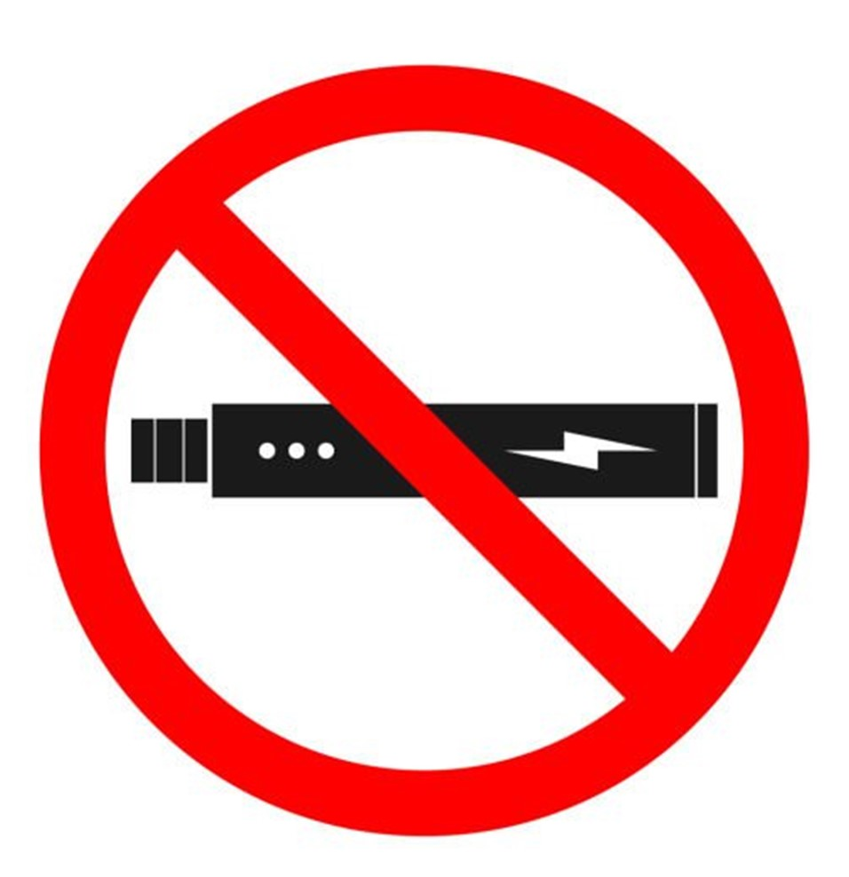

Portfolio
-
Autonomous Vehicle
This project was the main focus of my Junior Design course. It involved developing a supercapacitor-based energy storage system to power a remote-control car, and developing software to control the car's speed and direction, enabling it to autonomously naviagate a track. I was responsible for developing the control software for the car, which involved interfacing with a Pixycam computer vision camera, a brushless motor, and steering servos, all through an ESP32 microcontroller. Our project had mixed degrees of success, with our software being solid, but our supercapacitor system not being ablet to provide the power we needed to properly navigate the track.
-
Vaping Cessation Device
This project involved developing a vaping cessation device from the ground up for a startup trying to help people successfully quit vaping. I was responsible for firmware development, which was done on a TI CC26xx series microcontroller, and also aided in fleshing out the final enclousre design. One of the most challenging aspects of the project was developing drivers for a 128x64 OLED display, along with a user interface that could be easily navigated using only one button.
-
Alarm Clock
For my embedded systems course's final project, I developed a small alarm clock.It used an RTC (Real-Time Clock) module to keep track of the time, and a piezo buzzer to act as the alarm. The clock could keep track of day, date, hours, minutes, and seconds, and had a single alarm function that could be set and turned on or off as needed. Several LEDs were used as indicators, and the display was a simple 2-row Hitachi HD44780 LCD display.